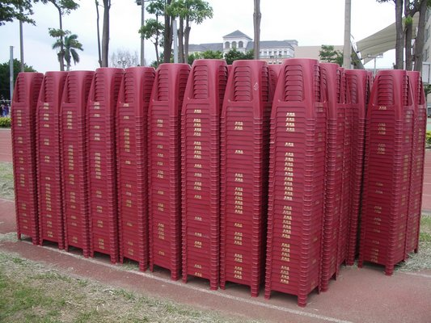

The plastic stool has a hole
in it centre of the seat
this has no relation with the atmosphere
just for you to fart confidently
so you don't need to stand up.

Number 2
The plastic stool is stackable,
it is easy to stack up but hard to pull out.
this has no relation with the atmosphere
Because of it, you can train
your strength and muscles effectively.
Number 2
It is incredibly cheap.
With only 12 dollars,
you can buy two to three plastic stools or even more.
also, it is easy to buy in
either an online shop or a real shop.